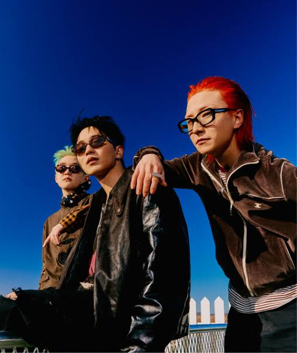
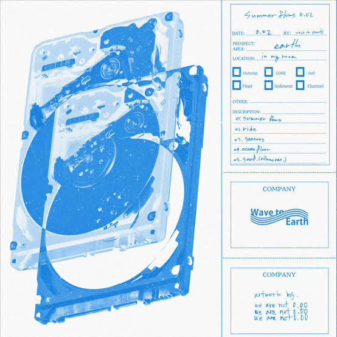

Influencer
Tirta Mandira Hudhi
Tirta Mandira Hudhi atau Dokter Tirta adalah contoh profesional muda yang berhasil menggabungkan karier di bidang medis, bisnis, dan influencer. Dengan kombinasi kedokteran, kemampuan bisnis, dan kehadiran di media sosial, ia sukses membangun usaha perawatan sepatu, mengedukasi masyarakat soal kesehatan, dan mengambil peran aktif dalam isu sosial. Ia juga memiliki komunikasi yang unik, sehingga setiap memberikan ilmu pengetahuan yang ia miliki, penyampaiannya cenderung tidak mudah bosan.
Band Music
Wave To Earth
Wave to Earth adalah band indie asal Korea Selatan yang dikenal dengan musik mereka yang menggabungkan unsur lo-fi, jazz, rock, dan dream pop. Band ini memiliki anggota band yang terdiri dari Kim Daniel, Shin Dongkyu, dan Cha Soonjong. Lagu-lagu yang cukup populer yang ada di band ini seperti Love. , Seasons, Bad, Sunny Days, Homesick.
Song
Seasons
Menceritakan tentang kisah cinta yang penuh dengan perasaan ketidakpastian dan penyesalan. Liriknya menggambarkan seorang pria yang jatuh cinta namun takut untuk mengungkapkan perasaannya karena khawatir akan menyakiti orang yang dicintainya. Ketika orang yang dicintainya pergi, rasa takut itu berubah menjadi penyesalan mendalam. Pria itu berharap mendapatkan kesempatan kedua untuk menyatakan cintanya dan berjanji akan memberikan segalanya untuk orang tersebut.